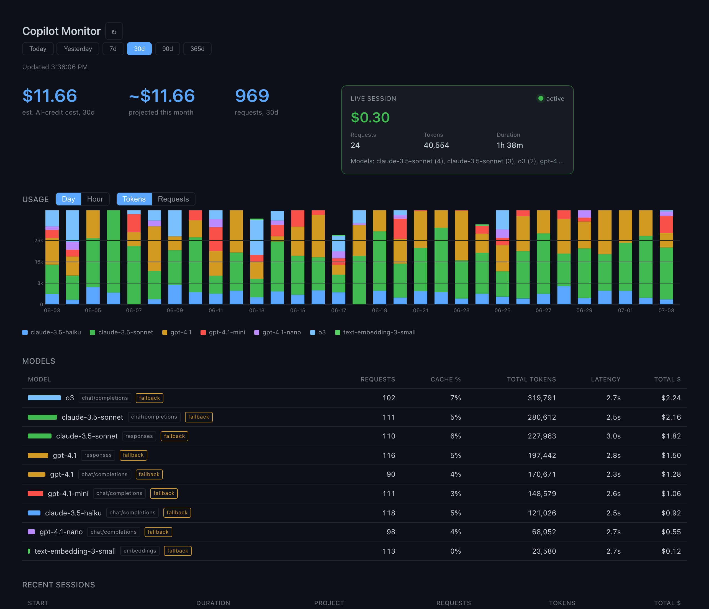

A local HTTP reverse proxy that records per-request metadata, token counts, latency, and an estimated AI-credit cost. Stored in SQLite on your machine. No cloud. No telemetry. No prompts, completions, source code, or auth headers are ever written to disk.
Real screenshot of the local dashboard at http://127.0.0.1:7734, taken against seeded sample data. Your numbers, your view.

GitHub Copilot picks models automatically, charges AI credits invisibly, and exposes usage summaries
only on github.com with a 24-hour delay. You don't know which model handled your last
prompt, whether you got a cache hit, or what that refactor session actually cost you.
Copilot Monitor gives you the raw numbers from your own machine: per-model token counts, latency, estimated cost, and 30-minute session groupings. Local dashboard with a period selector (today / yesterday / 7d / 30d / 90d / 365d) and a JSON API for your own scripts.
A reverse proxy sits between VSCode and the Copilot API, capturing metadata on the way through. Output goes to a local SQLite file and a dashboard on loopback.
request → copilot-monitor → response · metadata → SQLite · dashboard reads SQLite
Every captured request maps to an estimated AI-credit list price, broken down by prompt, cached input, cache write, and output tokens. Clearly labeled as estimates. Tagged when pricing is fallback or not-billed.
Every report (stats, cost, today, sessions, export) works in the terminal and serves JSON for your own tooling.
Requests grouped by a 30-minute inactivity gap. See the model mix, cost, and duration of the session you're in right now.
Today / yesterday / 7d / 30d / 90d / 365d. Every section of the dashboard filters to the same window.
Binds to 127.0.0.1. SQLite at ~/.local/share/copilot-monitor/store.db. No external requests, ever.
Single Go binary. Schema in internal/store/schema.sql. Read the source, audit the captures, trust what you see.
The privacy contract is enforced by the schema, not by policy. No prompt, completion, source code, or auth material is ever written to disk.
127.0.0.1 and the dashboard binds to 127.0.0.1. Nothing is reachable from another machine.~/.local/share/copilot-monitor/store.db on your machine. If you delete the file, every trace is gone.Use it if any of these sound like you.
You want to know which models you're actually calling, and what your prompts cost. Not a corporate dashboard, your own numbers on your own machine.
Copilot Monitor breaks cached-input versus uncached tokens down per session, so you can see which prompt patterns actually pay off.
Read the schema, inspect the source, verify nothing leaves your machine. The privacy contract is enforced by the schema, not by a privacy policy.
Every endpoint returns JSON. Every CLI command has --json. Queries are SQL against a SQLite file you own.
Clone, build, run. The devenv shell provides the Go toolchain.
# clone and enter the dev shell git clone https://github.com/koopycat/copilot-monitor cd copilot-monitor devenv shell # build, then run the proxy + dashboard just build ./copilot-monitor run & ./copilot-monitor serve # point VSCode at the proxy ./copilot-monitor configure-vscode >> ~/.config/Code/User/settings.json # reload VSCode and use Copilot normally
Open http://127.0.0.1:7734 for the dashboard.